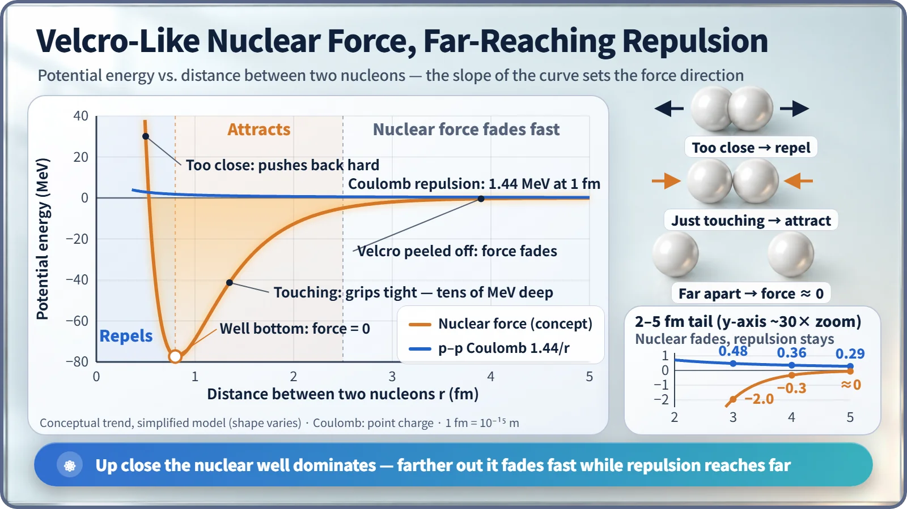
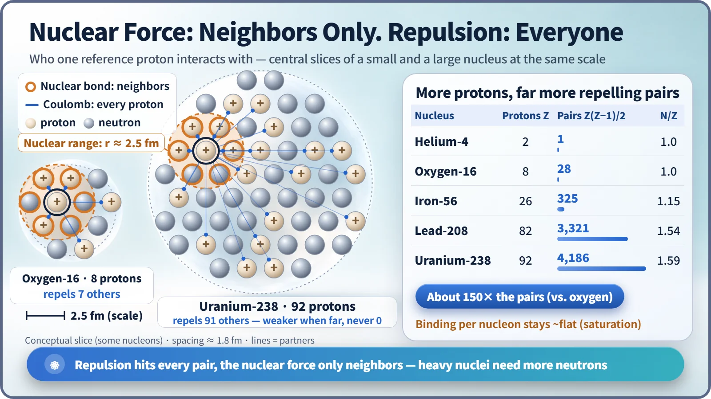

Nuclear & Radiation Basics · 009
A Force That Only Works When Touching, Like Velcro — How the Nuclear Force Beats Electric Repulsion
The nuclear force grips only neighbors at touching distance, while electric repulsion reaches every proton. That imbalance is why heavy nuclei need extra neutrons.
The nuclear force attracts strongly only at touching distances (about 0.8–2 fm), fades to almost nothing beyond about 2.5–3 fm, and pushes back closer than about 0.7 fm. Electric repulsion is weaker up close but reaches every proton in the nucleus, so it piles up in big nuclei, which is why heavy nuclei need extra neutrons. [1]
Two specks pushing apart with the weight of a suitcase
A proton carries positive electric charge, and like charges push each other away. Yet inside a nucleus, protons sit only about 1 femtometer (fm) apart; one femtometer is 10−15 m.
At that distance two protons push each other with about 230 newtons, the force it takes to lift a 23 kg object, about the weight of a fully packed airline suitcase. A uranium nucleus holds 92 of these protons. Even so, nuclei hold together for billions of years. Something beats that repulsion: the nuclear force, and it wins under some surprisingly fussy conditions. [4]
Peel a strip of Velcro
Press the hook side and loop side of Velcro together and they stick firmly. Hold them just 1–2 mm apart and you feel nothing: no gentle tug from a distance. It only grips where it actually touches.
The nuclear force has exactly this personality. It is the attraction between the protons and neutrons in a nucleus, together called nucleons. Strictly, it is the strong interaction, which binds the quarks inside each nucleon, leaking slightly out beyond the nucleon. It acts with almost the same strength on protons and neutrons, regardless of charge. No real hooks are involved; the analogy only captures that the force is strong up close.
The three faces of the nuclear force
Slide the distance between two nucleons from 0 to 5 fm and three zones stand out.
About 0.8–2 fm, where nucleons sit side by side, the nuclear force attracts strongly. In energy terms it digs a well tens of MeV deep, while the electric repulsion energy between two protons at 1 fm is only about 1.44 MeV. At touching distance the nuclear force wins by more than tens of times. [2]
Beyond about 2.5–3 fm, the nuclear force drops to nearly zero, like Velcro held apart. Electric repulsion only fades slowly, in inverse proportion to distance, and is still there at 3 fm and 5 fm. The usual explanation for the short reach is that the particle carrying the nuclear force, the pion, has mass and can't travel far, whereas the photon that carries the electric force is massless and spreads without limit.
Closer than about 0.7 fm, the Velcro picture fails: the nuclear force pushes back hard. This repulsive core keeps nucleons from collapsing into a point, and helps keep nuclear density nearly the same whatever the nucleus's size. [1]

One force holds hands with neighbors; the other fights everyone
Like Velcro, the nuclear force only sticks to what is directly touching. A nucleon holds tight to just a few others beside it, so however large a nucleus gets, the binding each nucleon gains hardly grows. This is the saturation of the nuclear force. [3]
Electric repulsion weakens with distance but reaches far, so every pair of protons pushes on each other. With Z protons there are Z(Z−1)/2 repelling pairs.
| Nucleus | Protons Z | Repelling pairs Z(Z−1)/2 | Neutrons per proton (N/Z) |
|---|---|---|---|
| Helium-4 | 2 | 1 | 1.0 |
| Oxygen-16 | 8 | 28 | 1.0 |
| Iron-56 | 26 | 325 | ≈ 1.15 |
| Lead-208 | 82 | 3,321 | ≈ 1.54 |
| Uranium-238 | 92 | 4,186 | ≈ 1.59 |
From oxygen to uranium the proton count grows a little more than 11 times, but the repelling pairs balloon nearly 150 times. Size matters too: a uranium nucleus is about 15 fm across, several times the nuclear force's reach. A proton at one edge has no nuclear-force link to one on the far side, yet the two still push on each other. [2]

That's why big nuclei collect extra neutrons
The fix is the neutron. With no charge, it adds no repulsion while still adding nuclear-force glue, like a strip of Velcro with no repulsion attached. So the bigger the nucleus, the higher its share of neutrons: oxygen-16 is 8 to 8, iron-56 about 1.15 neutrons per proton, lead-208 about 1.54, and uranium-238, at 146 to 92, about 1.59. Piling in neutrons without limit doesn't work either; where the sustainable balance lies is the story of stable and unstable nuclei. The precarious pile-up of repulsion in heavy nuclei is also the groundwork for understanding why nuclei like uranium can split in two.
Two misconceptions
"The nuclear force is so strong that it pulls from far away." It dies out much faster than electric repulsion and is effectively zero beyond about 3 fm. At the size of an atom, about 100,000 fm, it can't be felt at all.
"The closer, the harder it pulls." Get very close and it pushes. The nuclear force is strong only at just-touching distances.
Key takeaways
Two protons 1 fm apart push each other with about 230 N. The nuclear force attracts strongly at about 0.8–2 fm, is nearly zero beyond 2.5–3 fm, and repels closer than about 0.7 fm. The nuclear force acts only between neighbors, electric repulsion between every pair of protons, so bigger nuclei need more neutrons, which add glue without adding repulsion.